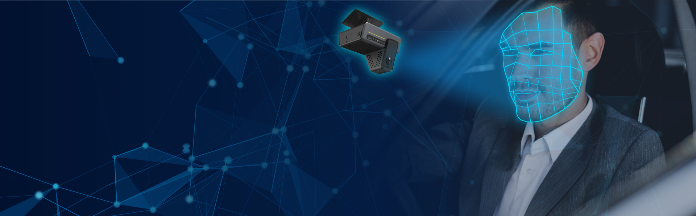
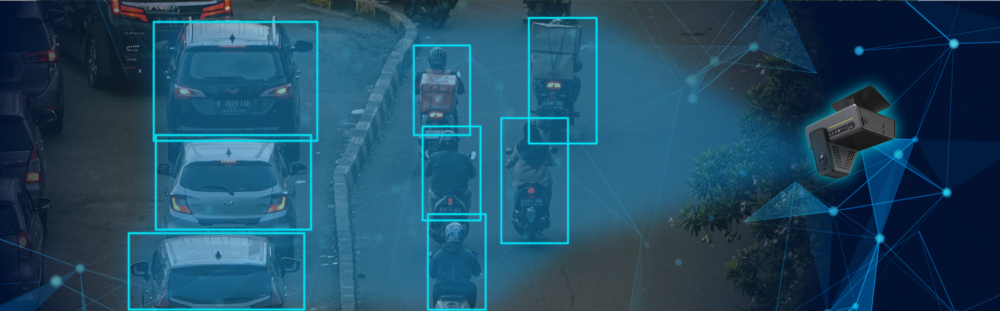

<div class="content">
<div id="carouselExampleIndicators" class=" carousel slide carousel-fade" data-bs-ride="carousel" data-bs-interval="6000">
  <div class="carousel-indicators">
    <button type="button" data-bs-target="#carouselExampleIndicators" data-bs-slide-to="0" class="active boton" aria-current="true" aria-label="Slide 1"></button>
    <button class="boton" type="button" data-bs-target="#carouselExampleIndicators" data-bs-slide-to="1" aria-label="Slide 2"></button>
    <button class="boton" type="button" data-bs-target="#carouselExampleIndicators" data-bs-slide-to="2" aria-label="Slide 3"></button>
    <button class="boton" type="button" data-bs-target="#carouselExampleIndicators" data-bs-slide-to="3" aria-label="Slide 4"></button>
  </div>
    <div class="carrosel carousel-inner">
      <div class="carousel-item active">
        
        <div class="text carousel-caption d-md-block">
          <h5>Inteligencia artificial y reconocimiento facial</h5>
          <p>Identifica potenciales peligros al conducir y emite notificaciones auditivas para fomentar una conducción más segura.</p>
        </div>
      </div>
      <div class="carousel-item">
        
        <div class="text-four carousel-caption d-md-block">
          <h5>Deteccion del camino</h5>
          <p>Incrementa la <span>Seguridad</span> al identificar y evitar posibles situaciones de riesgo en las proximidades del vehículo.</p>
        </div>
      </div>
      <div class="carousel-item">
        
        <div class="text-three carousel-caption d-md-block">
          <h5>La Seguridad De Verlo Todo!.</h5>
        </div>
      </div>
      <div class="carousel-item">
        
        
        <div class="text-two carousel-caption d-md-block">
          <h5>Smart Cloud</h5>  
          <p>Almacenamiento en la nube de evidencias de conduccion en <span>Tiempo real</span>, estadisticas e historial de recorrido</p>
          
        </div>
      </div>
    </div>
    <button class="carousel-control-prev " type="button" data-bs-target="#carouselExampleIndicators" data-bs-slide="prev">
      <span class="span-carousel carousel-control-prev-icon " aria-hidden="true"></span>
      <span class=" visually-hidden">Previous</span>
    </button>
    <button class="carousel-control-next" type="button" data-bs-target="#carouselExampleIndicators" data-bs-slide="next">
      <span class="span-carousel carousel-control-next-icon" aria-hidden="true"></span>
      <span class="visually-hidden">Next</span>
    </button>
  </div>
</div>